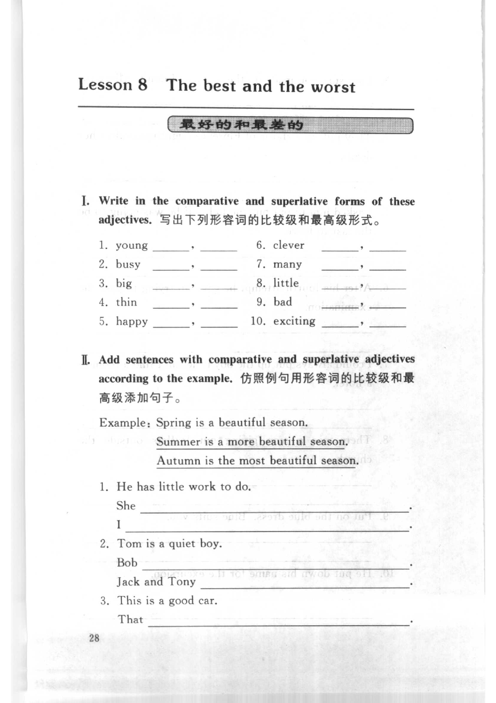
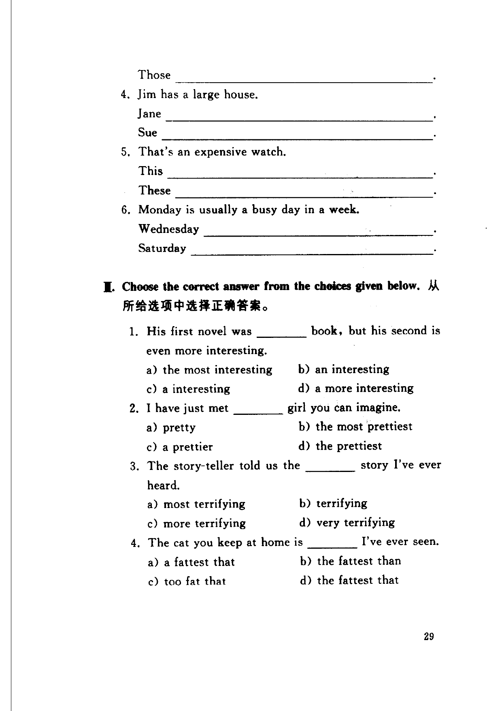
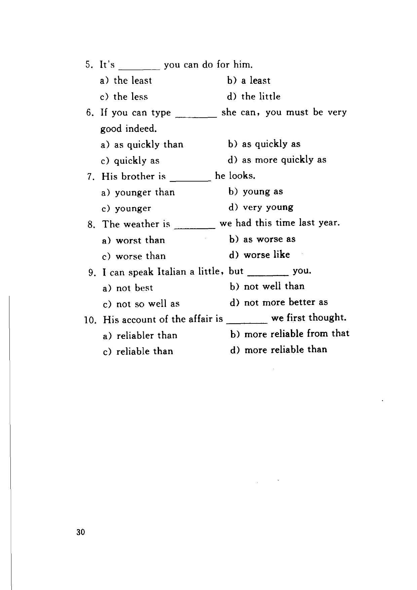

Grammar exercises · 语法练习
I. Write in the comparative and superlative forms of these adjectives.
写出下列形容词的比较级和最高级形式。
-
I. Comparative/superlative — young: (comparative), (superlative)
-
I. Comparative/superlative — busy: (comparative), (superlative)
-
I. Comparative/superlative — big: (comparative), (superlative)
-
I. Comparative/superlative — thin: (comparative), (superlative)
-
I. Comparative/superlative — happy: (comparative), (superlative)
-
I. Comparative/superlative — clever: (comparative), (superlative)
-
I. Comparative/superlative — many: (comparative), (superlative)
-
I. Comparative/superlative — little: (comparative), (superlative)
-
I. Comparative/superlative — bad: (comparative), (superlative)
-
I. Comparative/superlative — exciting: (comparative), (superlative)
II. Add sentences with comparative and superlative adjectives according to the example.
仿照例句用形容词的比较级和最高级添加句子。
Example · 例句
Spring is a beautiful season.
Summer is a more beautiful season.
Autumn is the most beautiful season.
-
II. Add sentences — He has little work to do.
She .
I . -
II. Add sentences — Tom is a quiet boy.
Bob .
Jack and Tony . -
II. Add sentences — This is a good car.
That .
Those . -
II. Add sentences — Jim has a large house.
Jane .
Sue . -
II. Add sentences — That's an expensive watch.
This .
These . -
II. Add sentences — Monday is usually a busy day in a week.
Wednesday .
Saturday .
III. Choose the correct answer from the choices given below.
从所给选项中选择正确答案。
-
III. Multiple choice — His first novel was book, but his second is even more interesting. a) the most interesting b) an interesting c) a interesting d) a more interesting
-
III. Multiple choice — I have just met girl you can imagine. a) pretty b) the most prettiest c) a prettier d) the prettiest
-
III. Multiple choice — The story-teller told us the story I've ever heard. a) most terrifying b) terrifying c) more terrifying d) very terrifying
-
III. Multiple choice — The cat you keep at home is I've ever seen. a) a fattest that b) the fattest than c) too fat that d) the fattest that
-
III. Multiple choice — It's you can do for him. a) the least b) a least c) the less d) the little
-
III. Multiple choice — If you can type she can, you must be very good indeed. a) as quickly than b) as quickly as c) quickly as d) as more quickly as
-
III. Multiple choice — His brother is he looks. a) younger than b) young as c) younger d) very young
-
III. Multiple choice — The weather is we had this time last year. a) worst than b) as worse as c) worse than d) worse like
-
III. Multiple choice — I can speak Italian a little, but you. a) not best b) not well than c) not so well as d) not more better as
-
III. Multiple choice — His account of the affair is we first thought. a) reliabler than b) more reliable from that c) reliable than d) more reliable than
Original images · 原图对照
Expand a page to compare it with the transcription. Open the original in a new tab to zoom in.
展开原图核对文字，也可以在新标签页打开原图放大查看。
Book page 1 · Exercise I (comparative/superlative, items 1–10) and Exercise II (items 1–3 start)
Open original · 打开原图 ↗ Download original · 下载原图


Book page 2 · Exercise II (items 3–6) and Exercise III (items 1–4)
Open original · 打开原图 ↗ Download original · 下载原图


Book page 3 · Exercise III (items 5–10)
Open original · 打开原图 ↗ Download original · 下载原图


Your notes and answers
Use this space for longer responses or exercises that do not have an individual answer box.